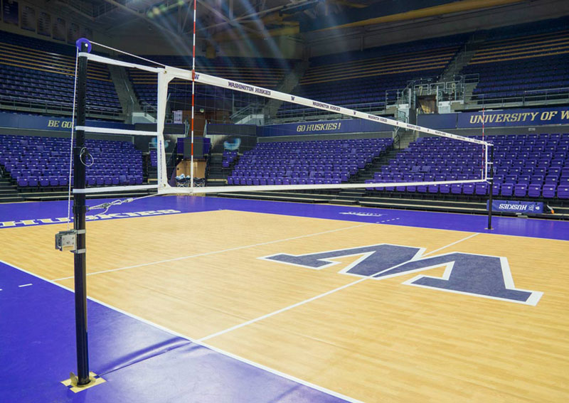
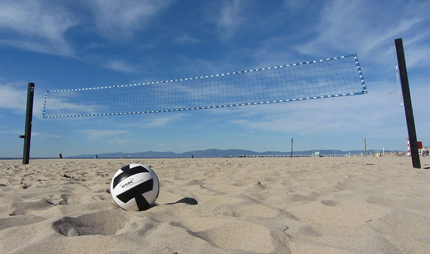

.
.
.
1. Indoor Volleyball
Indoor volleyball is the most common version of volleyball and the kind that people think of when they hear the word. Indoor volleyball is played in a gym, with a court that is 30 feet long, with six players on the court at one time.
Pros: More people on the court, feet free to move without anything holding them back, not affected by weather or sunlight, AC indoors,
Cons: Less touches, loud arena, hard gym floor (diving), bigger court
2. Beach Volleyball
Beach volleyball is the second most common version of volleyball that is played. Beach volleyball is played outside on the beach (obvi) and is played with two players on the court at all times. The court is about 26 ft long.
Pros: Sand is soft to land on, more touches because less people,
Cons: affected by weather (cold or hot), looking into sun is hard, sand holds you down so you can't move as fast or jump as high, have to be good at every skill, wind